北見市相ノ内で三菱エアコン新規設置｜分電盤交換・専用回路増設工事
引っ越し先の住宅にエアコンがなく、分電盤も古いタイプだったため、漏電ブレーカー付きの新しい分電盤への交換とエアコン専用回路の増設を同時施工。化粧モールで配線を美しく隠し、室外機はFFストーブの排気筒との干渉を避けたL字配管で設置しました。
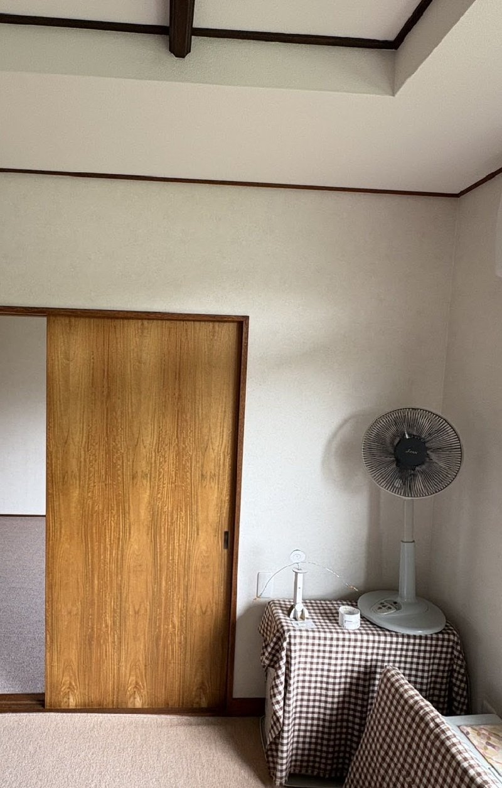
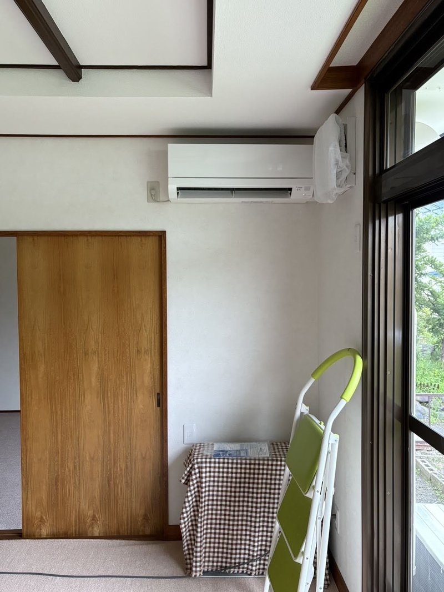
施工概要
| 施工日 | 2025年8月 |
|---|---|
| 地域 | 北海道北見市相ノ内 |
| 建物 | 戸建て |
| 工事内容 | エアコン新規設置 + 分電盤交換 + 専用回路増設 |
| 機種 | 三菱 霧ヶ峰 MSZ-GV3625W（12畳用） |
| 追加工事 | 分電盤交換（漏電ブレーカー付）、化粧モール配線、室外化粧カバー |
| 工期 | 1日 |
お客様のご要望
「引っ越してきた家にエアコンが付いていないので、新しく設置したい。分電盤も古いタイプなので、この機会に安全なものに交換してほしい。」
施工のポイント
漏電ブレーカーのない古い分電盤を交換
既存の分電盤は漏電ブレーカーが付いていない古いタイプでした。お客様は今後も長く住み続ける予定とのことで、ご相談のうえPanasonic製の漏電ブレーカー付き分電盤に丸ごと交換しました。エアコン専用回路も含めて安全性を確保しています。
化粧モールで配線を美しく隠す
エアコン専用コンセントがなかったため、分電盤から新たに専用回路を増設する必要がありました。化粧モールを使って電線をきれいに隠し、壁や天井に沿わせて目立たないように配線。見た目もすっきりと仕上げました。
FFストーブ排気筒を考慮したL字配管
室外機の配管をまっすぐ下ろした場合、将来FFストーブの排気筒を設置した際に干渉する可能性がありました。そこで途中でL字に曲げて室外機まで配管ダクトを引き回し、排気筒のスペースを確保。室外化粧カバーで美観も保っています。
全体的にきれいに収まった仕上がり
分電盤交換、専用回路増設、エアコン設置、室外化粧カバーまで一括で対応したことで、配線や配管の取り回しを統一的に設計。電気工事からエアコン工事までワンストップで施工し、全体的にきれいにまとまった仕上がりになりました。
施工の様子
ビフォー・アフター
室外機
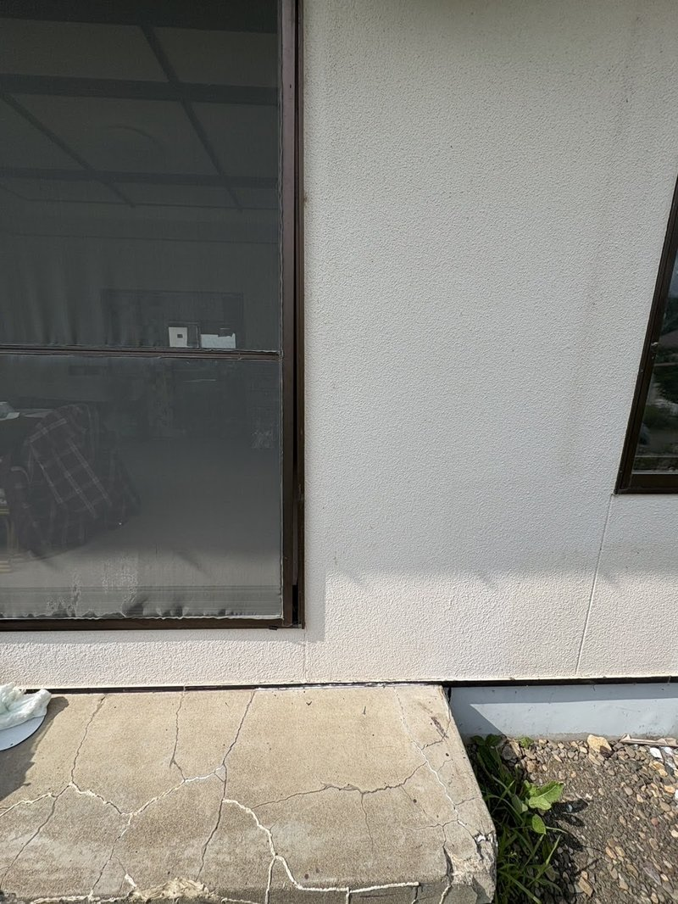
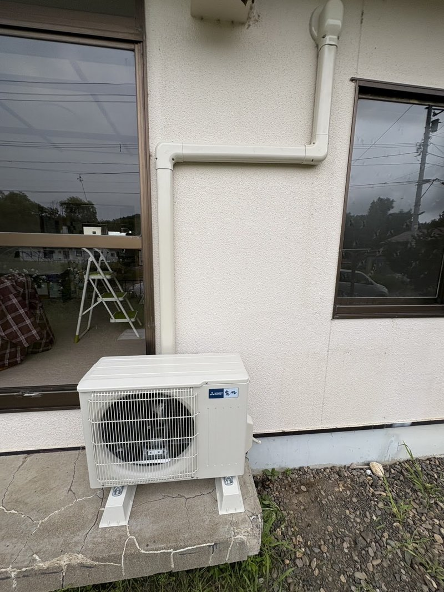
室内機
分電盤
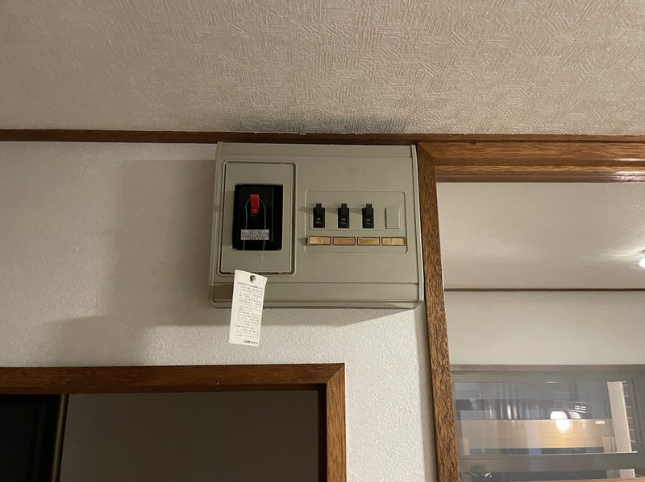
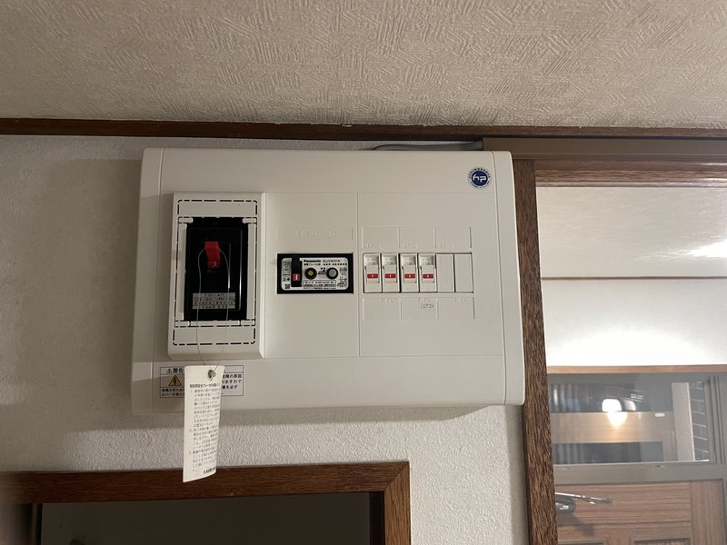
化粧モールによる専用回路配線
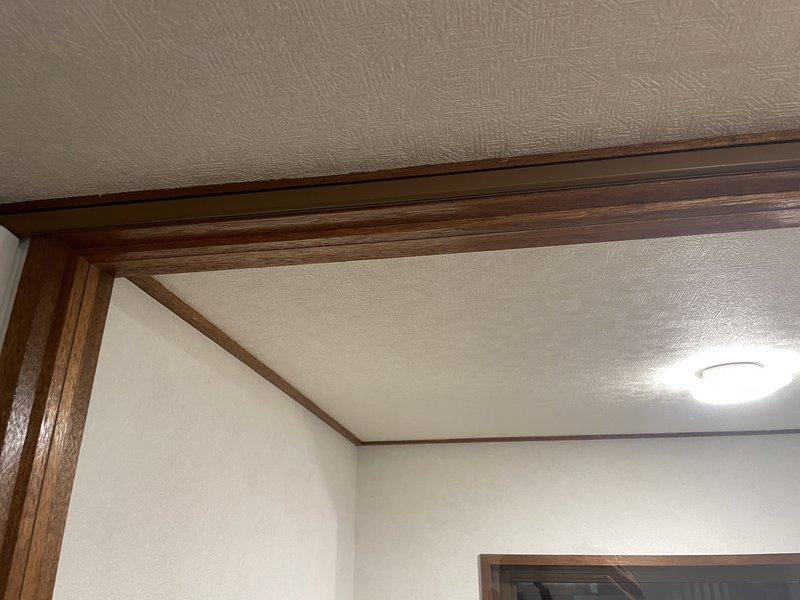
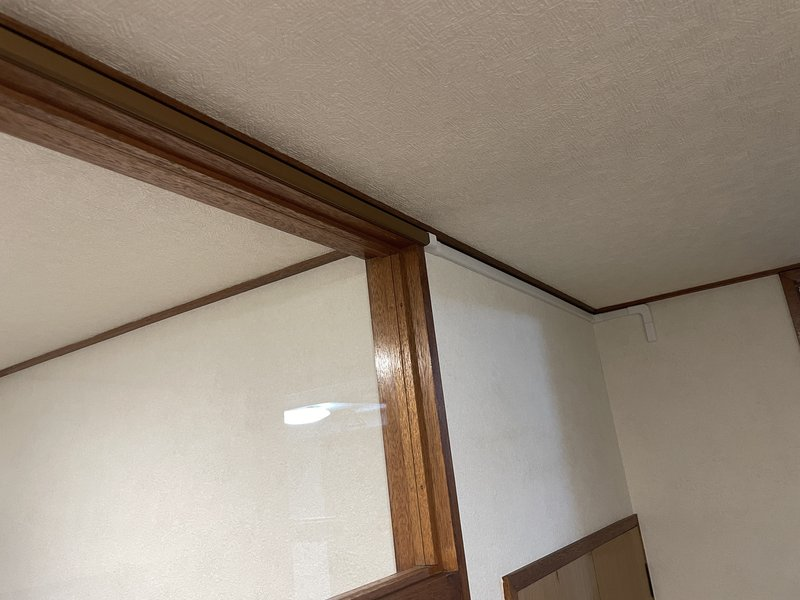
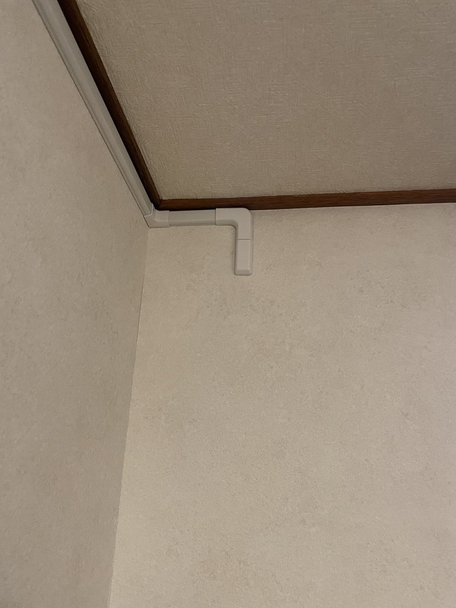
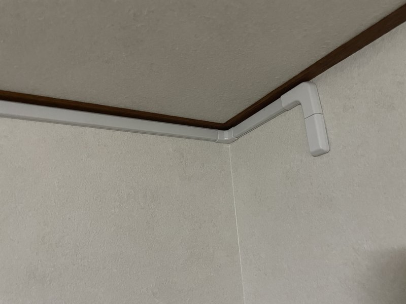
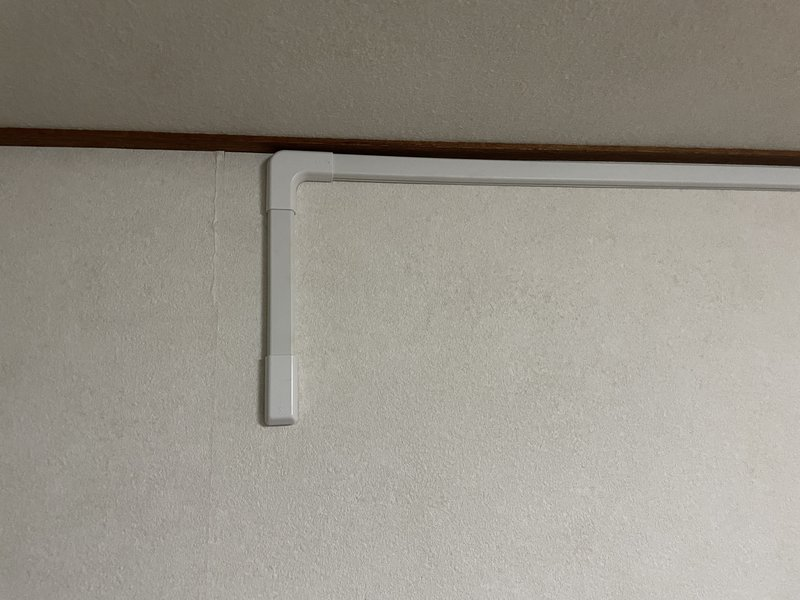
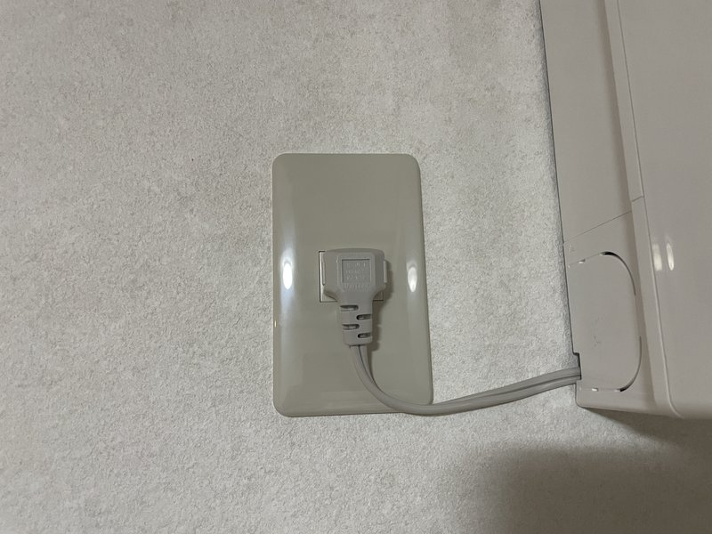
完成写真

お客様の声
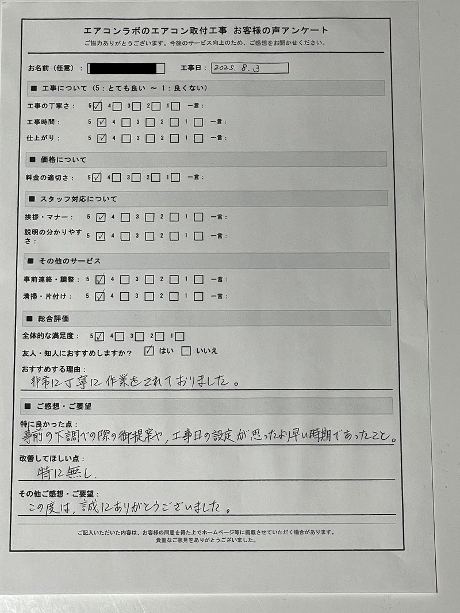
お客様にご記入いただいたアンケート
おすすめする理由：
「非常に丁寧に作業をされておりました。」
特に良かった点：
「事前の下調べの際の御提案や、工事日の設定が思ったより早い時期であったこと。」
改善してほしい点：
「特に無し。」
その他ご感想・ご要望：
「この度は、誠にありがとうございました。」
北見市相ノ内 お客様
友人・知人におすすめ：はい
担当者コメント
担当スタッフ
今回のお客様は引っ越してきた住宅にエアコンが付いておらず、新設をご希望でした。現地調査で分電盤を確認したところ、漏電ブレーカーのない古いタイプだったため、今後も長くお住まいになることを考慮して、分電盤ごとPanasonic製の漏電ブレーカー付きに交換することをご提案しました。
専用コンセントもなかったため、分電盤から化粧モールを使って電線を隠しながら新しくエアコン専用回路を増設しています。化粧モールは壁や天井に沿わせて目立たないように配線し、見た目にも配慮しました。
室外機の設置では、配管をまっすぐ下に降ろすとFFストーブの排気筒が付いた場合に干渉する可能性があったため、途中でL字に曲げて室外機まで配管ダクトを持っていきました。全体的にきれいに収まったと思います。
北見市の他の施工事例


北見市でエアコン工事をご検討中ですか？
お見積り無料。エアコンの購入から取付・電源工事までワンストップ対応。
北見市全域に出張費無料でお伺いします。
受付時間: 9:00〜19:00（年中無休）